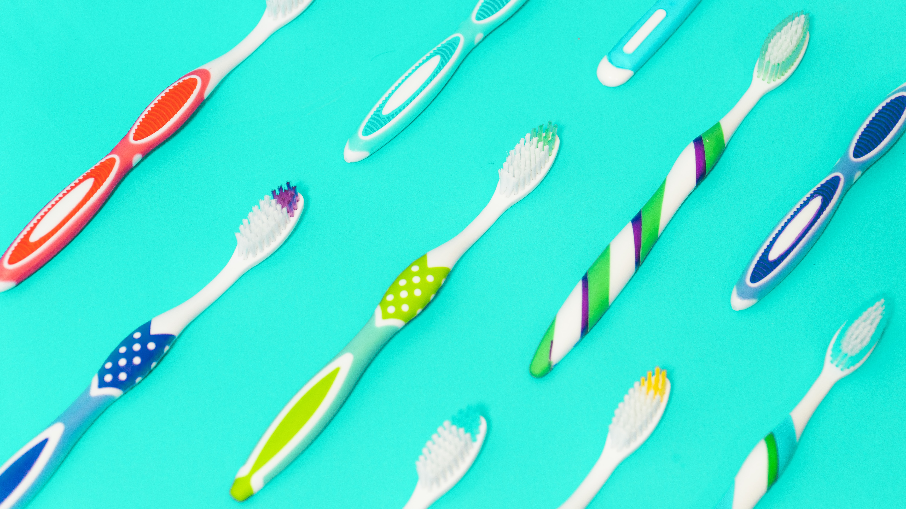

Dental scaling and brushing

Periodontitis (periodontal disease) is a chronic inflammatory disease.
Like high blood pressure and diabetes,
periodontitis is a chronic disease that progresses over time and progressively with discrete symptoms or painful manifestations accompanied by
spontaneous bleeding or brushing.
The treatment of periodontitis is complex:
- elimination of causal factors
- stop evolving
- scaling
- professional brushes
- immobilization of remaining teeth
- prosthetic dental works